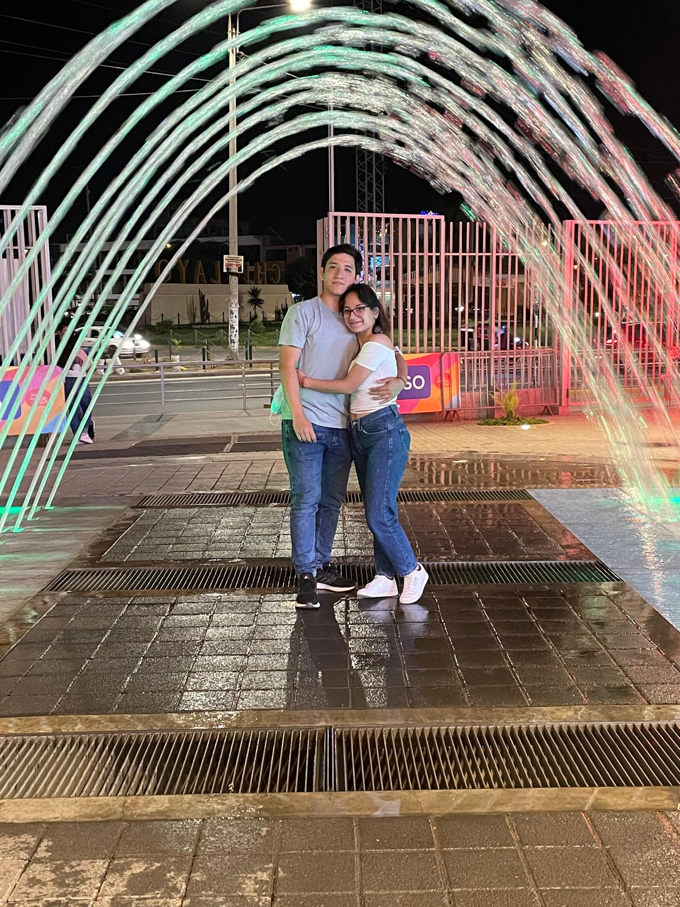
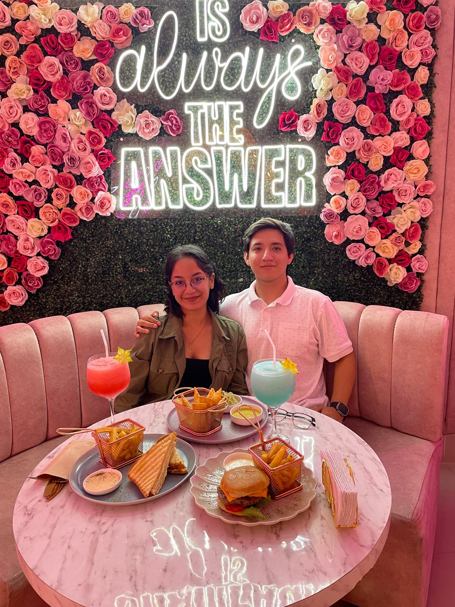
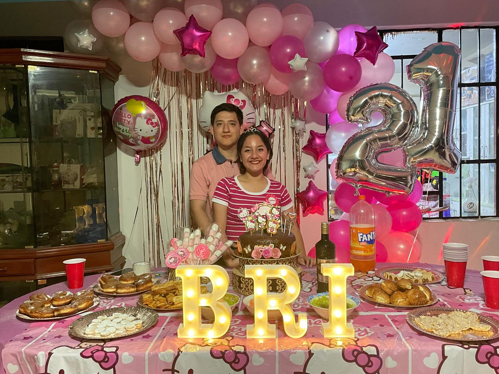
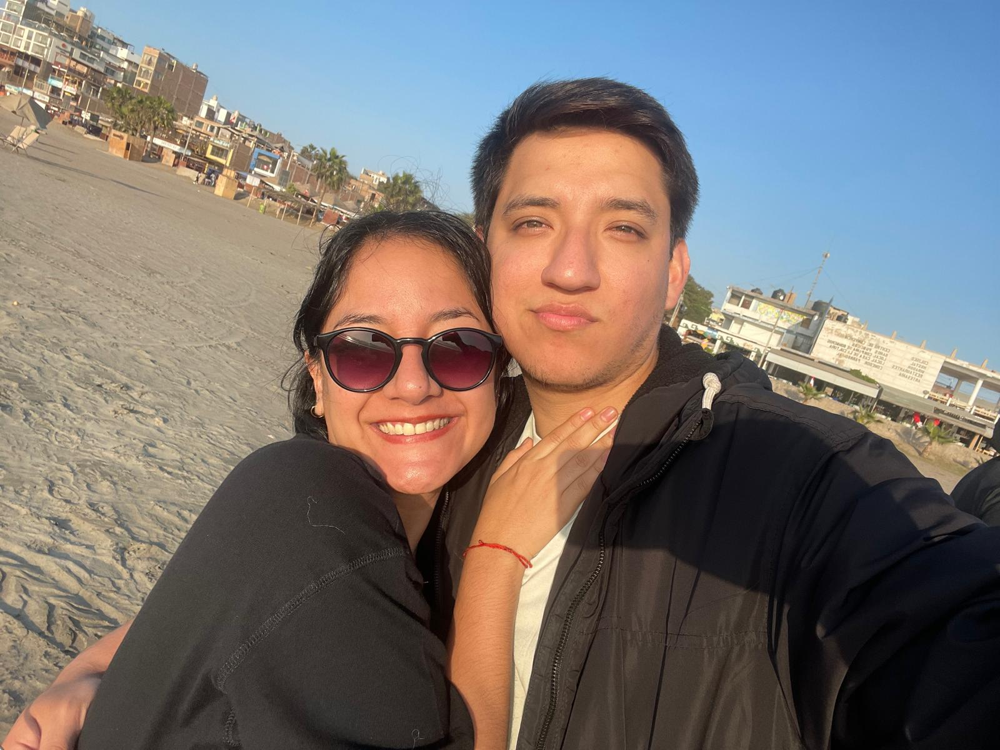
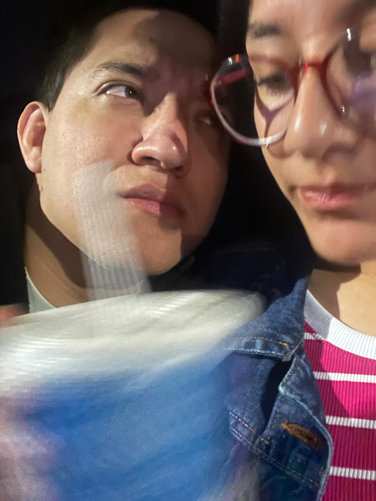
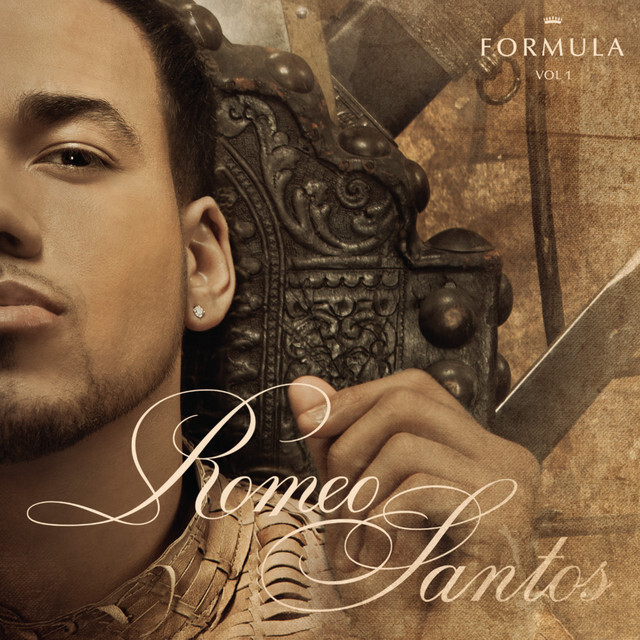
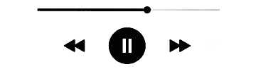
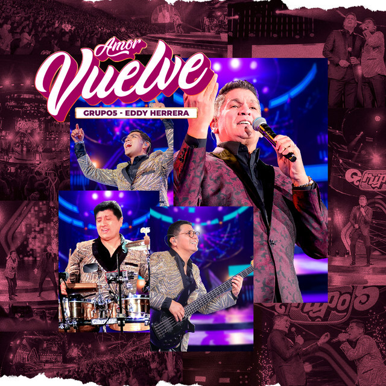
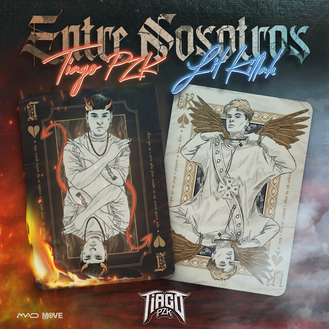
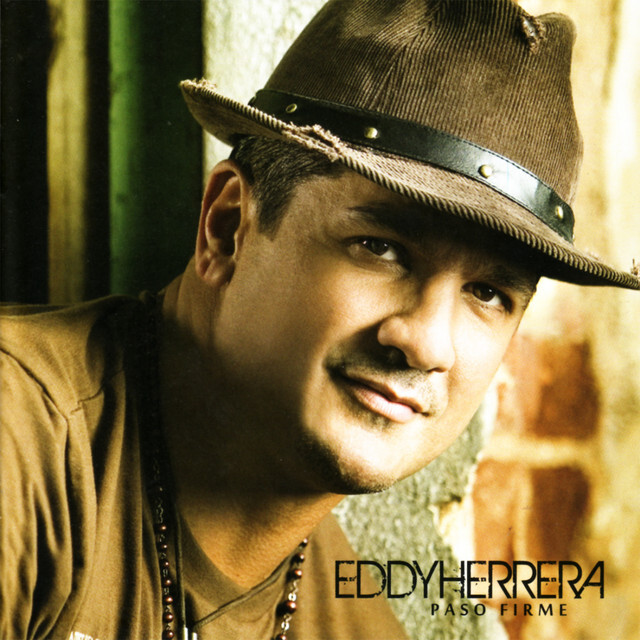

Alguna vez te preguntaste, ¿Cómo pasó todo tan de repente?, en un abrir y cerrar de ojos terminamos siendo una pareja hecha y derecha, con todo y nuestro laberinto emocional.
Siempre me pregunté que vi en ti, y siempre me respondía lo mismo, esa belleza que te caracteriza pero sobre todo esa bondad que hay en tus ojos y tu corazón, esa mitad de mi que complementa cada espacio de mi ser.

Nuestros primeros días juntos, haciendo crecer parte de nuestro amor y que pronto se convertiría en un gran deseo por mantenernos cerca.

Nuestro segundo encuentro después de casi 1 año y medio, muchas cosas que pasaron pero que supimos darle un rumbo nuevo a nuestra relación.

Nuestro más reciente encuentro, dónde sentí que me conecté más contigo, y vivimos muchas experiencias nuevas o retomando relaciones familiares.
¿Porqué a veces no soy tan romántico?
Tengo un problema con mi forma de demostrar mi amor y afecto, es algo que he trabajado desde pequeño incluso con mis padres
pero mucho tiene que ver un poco mi infancia en algo de soledad, sigue siendo más mi inspiración que es mucho más física, pero contra todo pronóstico, hoy estoy
esforzándome para que esta pequeña muestra de amor te guste tanto mi vida.

Tus locuras van completamente con las mías, siempre lo tuve claro, eres el martillo que le faltaba a mi clavo.
Aunque al final el que te clava soy yo. ♥
Amo cada aspecto de ti, desde tu risa exagerada que me llama mucho la atención, hasta tu manera desenfrenada de darme amor, este viaje ha sido una puerta
más para conocerte y sobre todo para poder vivir como tanto quiero, lleno de risas y cariño.
¿Qué planeo contigo?
Es una de mis ideas más hermosas, y a la vez de las más dificiles de cumplir, se trata de poder estar juntos aquí en Europa y poder pasar toda una vida juntos.
Pero todo se trata de resultados del año que viene, de ahorros, pero jamás con ganas de rendirme con eso, quiero vivir contigo y ser la familia que siempre anhelamos ♥.

Quizá no sea tan celoso contigo, aunque ya debería porque te me descarrilas con las ideas, pero la verdad muy aparte de la confianza que tengo contigo, se trata de todo el tiempo que hemos pasado juntos
me asegura lo importante que es para ti esta relación y sobre todo el esfuerzo de darnos tanto tiempo para poder lograr nuestros sueños JUNTOS ♥.
Nuestros gustos musicales
♥ No dudes presionar a cada tarjetita ♥

Llévame Contigo
Romeo Santos
1:03
3:48


Amor Vuelve FT Eddy Herrera
Grupo 5
0:55
3:49

Te Encontré
El Vega
0:35
3:56

Entre Nosotros FR Lit Killah
Thiago PZK
0:32
3:42

A dormir Juntitos FT Eddy Herrera
Liz
1:22
4:53
Espero te haya gustado mi vida...
Más allá del poco tiempo que pude tener, y sobre todo porque me distraigo muy rápido, le he dado todo mi cariño a esta pequeña carta virtual, recordando algunas de las cosas aprendidas en el insti, despedirme de esta carta de una manera presencial diciéndote que eres el amor de mi vida.
En este mundo es complicado actualmente saber que es lo que quiero, pero sé que lo quiero todo contigo, lo bueno y lo malo, lo grandioso y quizá las caídas, fuiste y serás siempre la persona que me ayuda a seguir creciendo y levantarme de todo lo bueno y malo.
Te amo con todo mi ser Briggitte Antuanet Padilla Rimaicuna de Llempén quiero estar siempre contigo, vivir contigo, cuidarte y protegerte de todo lo malo que hay en este mundo, me disculpo de ante mano de lo tonto que puedo ser o mi actitud tan extraña para comportarme en algunas situaciones pero,
que eso no sea un obstáculo para nosotros, Quiero casarme CONTIGO y vivir por y para siempre a tu lado mi amor.
Que esta carta sea un motivo para demostrarte mi cariño, y a la vez lo importante que eres para mi...
Firma tu futuro esposo y padre de tus 3 hijos
Anderson Llempen Herrera de Padilla